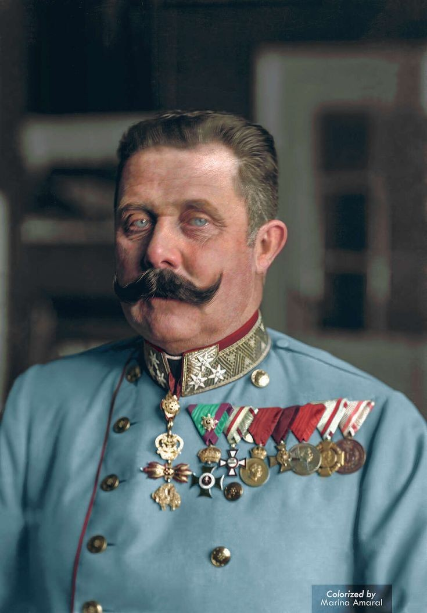

Owner of this To work:Webdevhtml
death June 28 1914
The assassination of Archduke Franz Ferdinand of Austria was a significant event that led to World War I. He was the heir presumptive to the Austro-Hungarian throne. Along with his wife, Sophie, Duchess of Hohenberg, they were assassinated on June 28, 1914, by a Bosnian Serb student named Gavrilo Princip. This event is considered one of the key triggers that led to the outbreak of the Great War.
The assassination and its aftermath eventually led to Austria-Hungary's declaration of war against Serbia, which in turn triggered a series of events that led to the start of World War I, four weeks after Franz Ferdinand's death.
For more detailed information, you can refer to these sources: Wikipedia